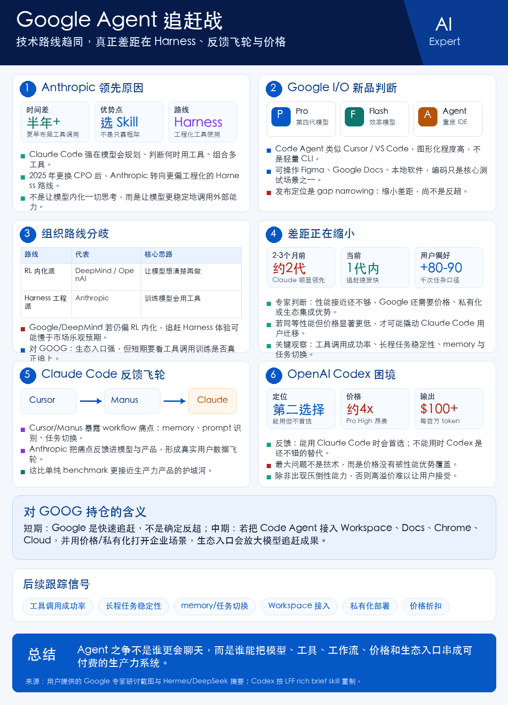

核心结论
AI Agent 的竞争正在从模型参数转向 Harness、工具调用、长程任务、用户反馈飞轮和价格体系。Anthropic 当前领先，Google 正在快速缩小差距，OpenAI Codex 技术可用但价格劣势明显。
对 GOOG 的含义
Google 的优势在 Workspace、Docs、Chrome、Android、Cloud 等生态入口，但短期发布更像 gap narrowing，不是反超。后续要看工具调用成功率、长程任务稳定性、私有化部署和价格策略是否能形成企业采用优势。